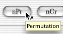
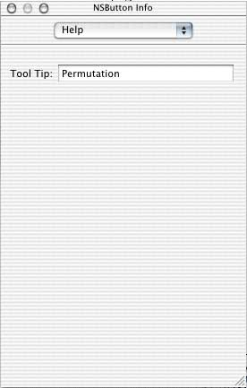

Tool Tips

A tool tip is a small box which appears near the cursor, displaying a small bit of information. Tool tips can be useful to help identify what buttons do. The expressions nPr or nCr are familiar those who know probability, but the button names may not be very
intuitive to those who are not as familiar with the field of probability. Allowing a tool tip to describe more obscure buttons is a useful tool for the user.
Adding a Tool Tip

- In the Interface Builder, click on the item (such as a button) that you want to apply the tool tip to.
- If the Show Info palette is not open already, go to Tools->Show Info.
- Change the selection menu to Help.
- In the Tool Tip field, type in the tool description.